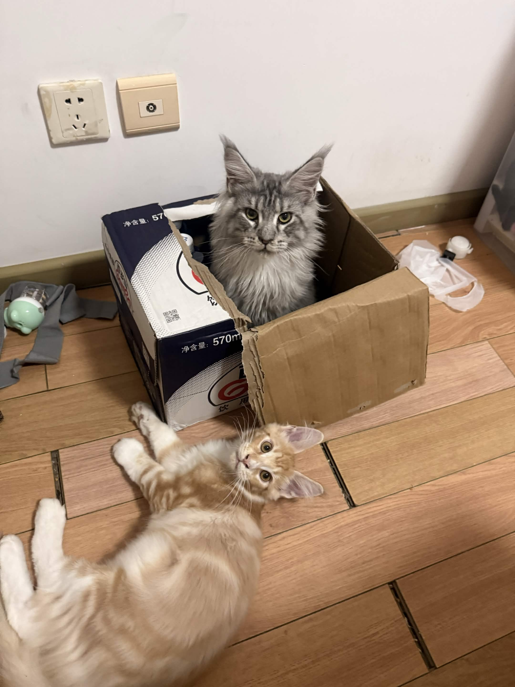

Education
Fall 2025 – Spring 2027
Cornell University
B.S. in Computer Science with Honors

Fall 2025 – Spring 2027
B.S. in Computer Science with Honors
September 2026 – Present
Undergraduate Researcher · Cornell University
Uncertainty quantification for lensless reconstruction.
Python · PyTorch · C++ · CUDA · Java
Aligning world-model predictions with action-relevant decisions through policy-induced latent geometry.
Calibrated loss targets for controllable language-model unlearning, evaluated on TOFU and MUSE-News.
Reproducing GAT on Cora and exploring structural graph features in phi-attention scoring for node classification.
An interactive guide to patch embeddings, self-attention, shifted windows, and hierarchical representations in ViT and Swin.
No matching classes. Try another class, professor, or semester.